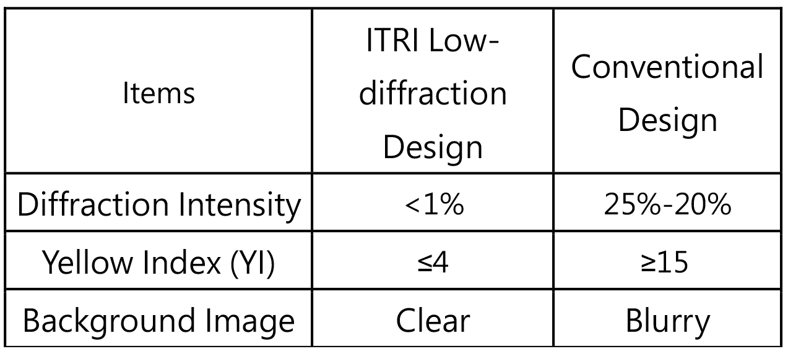

| 全球領先低繞射透明AM Micro LED The World's First Low Diffraction Transparent AM Micro LED |
| 工研院以透明顯示整合技術為基礎，開發低繞射透明顯示技術，可搭配面板廠既有製程，大幅降低背景光源繞射強度≤ 1%，提升顯示器背景影像清晰度，並降低面板黃化指數≤ 4，有效減少面板色偏現象，未來可應用於智慧移動、智慧育樂、智慧零售等場域。 ITRI has developed low diffraction transparent display based on transparent display integration technology. It can be used for existing manufacturing process, and greatly reduce the diffraction intensity of the background light source to 1%. It can improve the clarity of the background image of the display, and reduce the yellowing Index of the panel to lower than 4. This technology can effectively prevent yellowing caused. It can be applied to smart mobility, smart edutainment, smart retail and other fields in future.  |
| 技術洽詢聯絡人：張悠揚 聯絡電話：03-5917068 E-mail：ericyy@itri.org.tw |